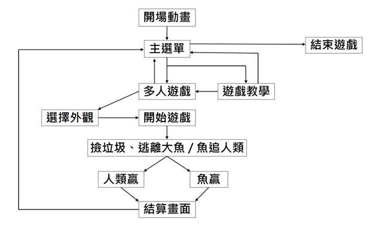
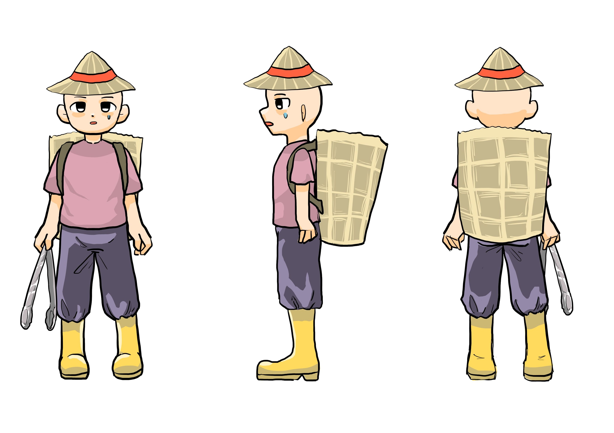
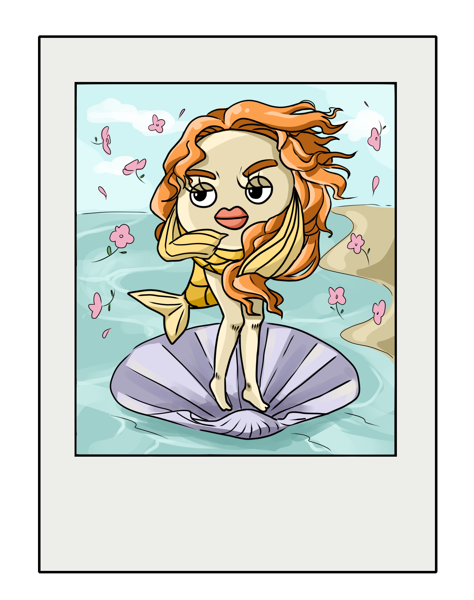
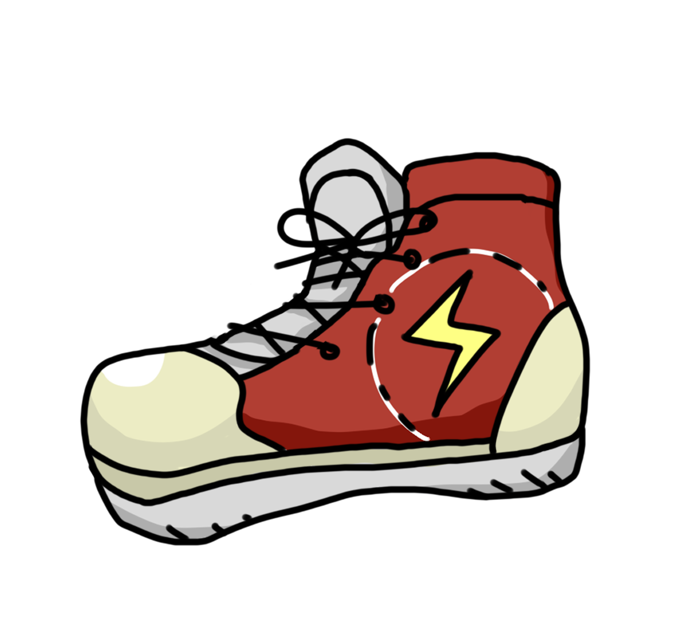
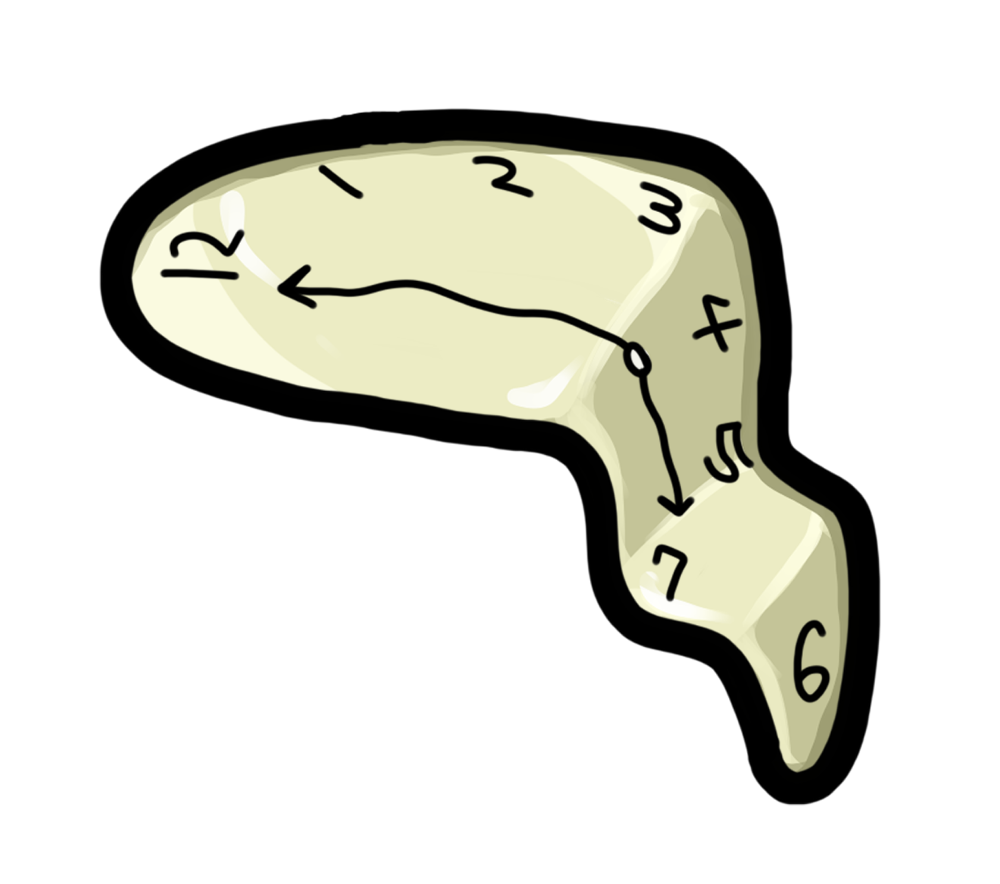
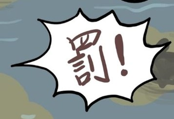
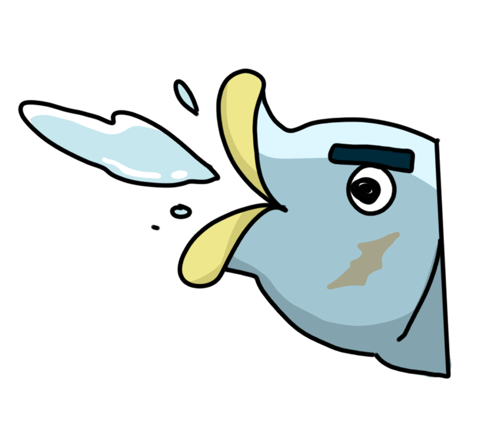
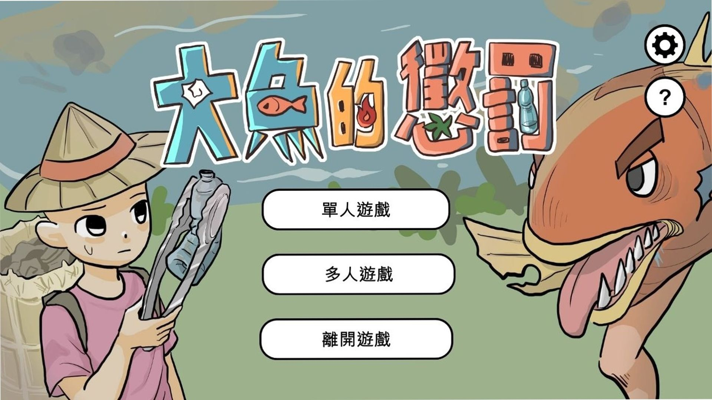
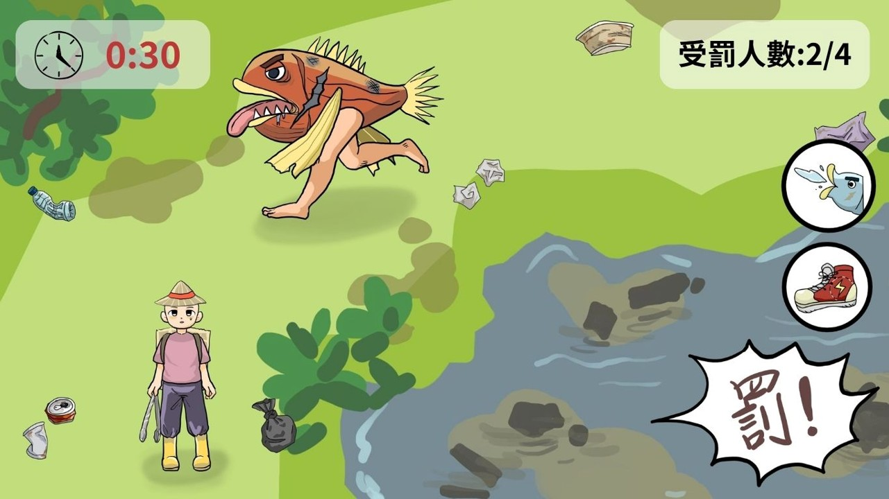

| 團體企劃 – 大魚的懲罰 |
| 發想 | 介紹 | 遊戲操作 | 美術設計 | 參考遊戲 | 簡報預覽 | 首頁 |
| 發想 |
一.、動機
想讓遊戲結合娛樂與寓意。靈感來自「人類因過度捕撈、污染環境而引發自然反撲」的想像。遊戲中的反派-大魚並不是邪惡，而是因人類破壞生態才選擇反擊。
二、目的
提醒人類對自然的影響，傳達環境議題。結合搞笑互動，使遊戲更輕鬆有趣。多數遊戲以打敗反派為目標，而這款遊戲是玩家「理解並安撫」反派。
| 介紹 |
一、遊戲類型
電腦2D遊戲 ‧多人遊戲(4-5人) ‧完成任務 ‧非對稱對戰動作遊戲 ‧第三人稱固定視角 ‧風格詼諧、有趣
二、故事大綱
佼佼湖有個「釣到大魚的人能富裕」的傳說，引起大眾紛紛來挑戰，隨著時間流逝，湖的環境惡化了。因此湖裡的大魚恨人類，他喝 3 下能長腳的藥水，離開湖向人類展開報仇。隨著城市被長出腳的魚摧毀，人類意識到自己的惡行，一同幫湖整潔，讓魚息怒。
三、遊戲規則
1.扮演人類的玩家要在時間內清完場地中的垃圾，並逃離魚的追擊，一位玩家被魚抓3次(即生命數3條)，會失去遊玩資格。
2.時間內清完垃圾，人類獲勝。如未在時間內清完，魚獲勝。可用道具延長遊戲時間或牽制魚的行動。
3.扮演魚的玩家要到處抓人類玩家，使用技能處罰人類，讓場內全玩家失去遊戲資格，遊戲結束即魚獲勝。
| 遊戲操作 |
一.操作方式
鍵盤WASD=角色移動
空白鍵=掙脫魚/懲罰人
滑鼠點擊=清垃圾/抓人類/使用道具
二.玩法介紹
‧一局約五到十分鐘進入多人遊戲，有開設房間和加入房間之選項，房主需設定一段4 字數字碼，邀請夥伴遊玩。
‧確認人數到齊後，系統會隨機選一位玩家 4 扮演大魚，其餘就是人類。人類方在地圖中尋找垃圾，點擊垃圾清理，點兩次消失。
‧遊戲時要與魚保持距離，在時間內清完垃圾。
‧人類撿大型垃圾要經過小遊戲，例如:垃圾分類(遊玩畫面為小視窗) 魚方在地圖中追人類，靠近後點擊「罰!」的按鈕進行懲罰。
三.流程圖

| 美術設計 |
○角色
大魚
長相兇惡、長腳、身體有傷
 |
人類
手拿夾垃圾用的夾子，各個玩家可以選職業，各個職業有特殊技能ex.漁民:游刃有漁(在湖中移動快一點)
|
 |
 |
○人類的道具
‧美人魚照片 = 能夠讓魚停在原地10秒 (*生成湖中，只有兩張)
‧布鞋 = 加快移動速度5秒 (*冷卻時間30秒 /*少量生成在地圖中)
‧時鐘 = 能加10秒時間 (*生成在地圖中/一場0~2個)
|
 |
 |
 |
○魚的道具與技能
‧按「罰」攻擊人類後會有冷卻時間(暫定10秒)
‧口水=人類玩家困在原地5秒
|
 |
 |
○垃圾
場地中生成40~60個

○場景
人和魚能穿過湖，草叢和樹能躲藏(人在湖中移動較慢；魚會變快)

○遊戲介面
|
 |
 |
 |
| 遊戲封面 | 配對畫面 | 內容畫面 |
 |
 |
 |
| 小遊戲畫面-1 | 小遊戲畫面-2 | 干擾大魚畫面 |
○結算介面
 |
 |
| 成功 | 失敗 |
| 工作分配與進度表 |
‧程式
主程式：卓立凱
UI 介面：林安均
角色與道具互動：卓立凱
小遊戲程式：曾子軒
等待大廳-多人聯機：卓立凱、曾子軒、林安均
音樂與音效：林安均
‧設計組
UI介面：羅羽岑
角色與道具互動：余佳穎
地圖：羅美欣
等待大廳：羅羽岑
前置動畫：羅羽岑、余佳穎
小遊戲畫面：羅美欣、羅羽岑
‧流程表
| 週數 | 程式 | 美術 | 音效 |
| 15 | 討論形程與分工 | ||
| 15 | Unity主選單流程（開始＞遊戲＞離開） 測試遊玩時鍵盤操作 |
繪製地圖1 草稿大魚跑步動畫 小視窗遊戲繪製（第 1、2款） |
背景音樂 |
| 16 | 小視窗遊戲發想（第3、4款） | 完成地圖1 修改遊戲操作介面 |
音效設計 |
| 17 | 人物角色：撿起物品 研究多人連線方法） |
人物角色：撿起物品動畫、人死亡圖示 | 音樂音效修改 |
| 18 | 地圖放到unity 設置地圖邊界與空氣牆 |
人物角色：走動動作與動畫 繪製小物件(垃圾) |
|
| 寒假1周 | 角色和背景移動垃圾隨機生成程式 | 地圖2草稿 小視窗遊戲的道具繪製 |
|
| 寒假2周 | 怪物(魚)的技能使用程式 人類角色道具使用效果，加速-加時間 |
完成地圖2 怪物(魚)的技能演示 |
|
| 寒假3周 | 小視窗遊戲遊玩與關閉程式 玩家死亡後不能動程式 測試多人連線 |
地圖3草稿 魚和人技能互動圖 (魚打人、魚看照片) |
|
| 寒假4周 | 分數統計遊戲結束後轉結算畫面程式 | 完成地圖3 結算畫面(類似報紙排版) |
|
| 寒假5周 | 結算紀錄切換畫面程式（例如從遊戲回主選單） | 地圖4 草稿測試遊戲，及修改設計網站 音樂:確認音效後加入遊戲中 |
|
| 寒假6周 | 修改簡報、企劃書 | ||
| 下學期第一周 | 遊戲雛形(Demo)完成 | ||
| 參考遊戲 |
 |
 |
| 黎明死線 | Among us |